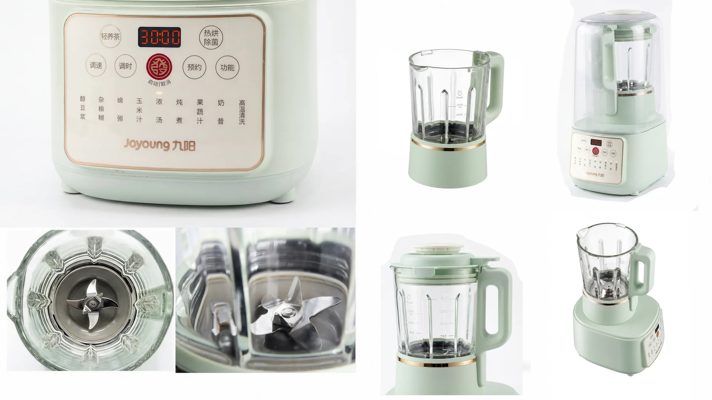
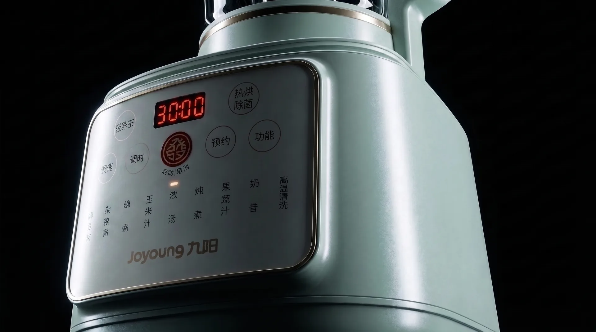
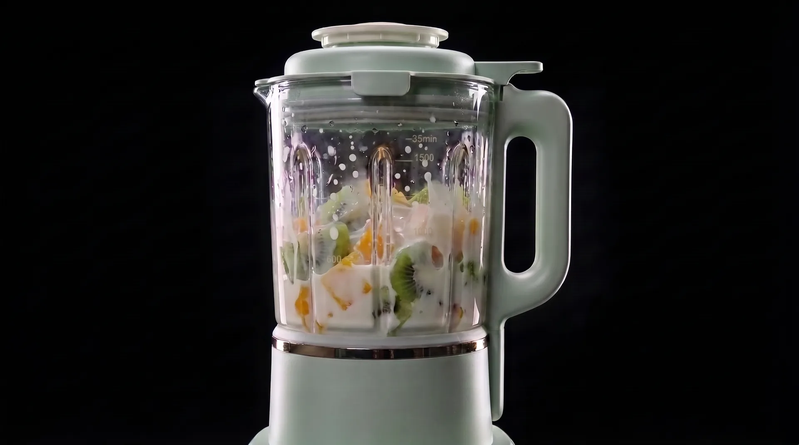
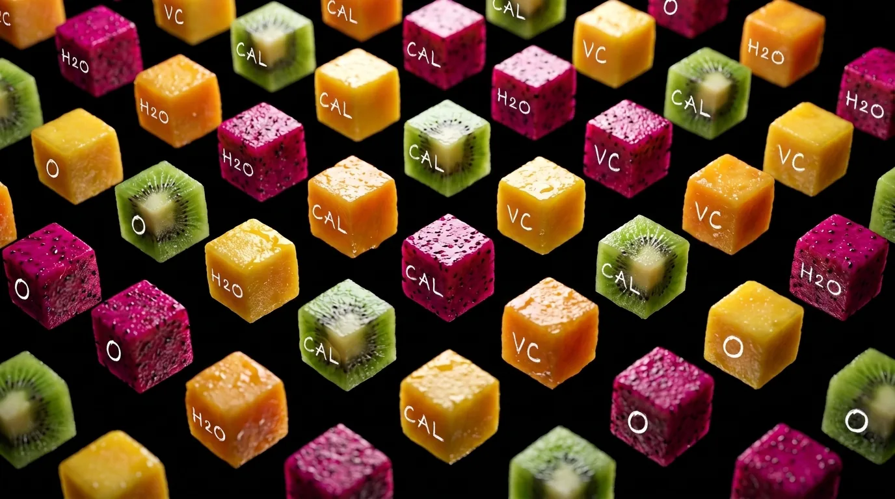

"融合（BLEND），不止是粉碎，更是微观世界的重组。"
在本次九阳破壁机的视觉策划中，我们试图打破传统小家电"纯功能性演示"的陈旧套路。将无序的自然食材，重塑为精准的几何形态；用极具爆发力的流体动效，碰撞静谧克制的产品外观。从微观的营养解构，到宏观的工业美学呈现，这不仅是一次关于食物形态的探索，更是现代厨房美学的一次全面革新。
卸下纷繁，回归纯粹的工业秩序。
清新雅致的莫兰迪绿，搭配香槟金的边框点缀。从整体结构到玻璃杯体，我们用图纸级的严谨多视角，解构这台现代厨房里的美学焦点。将无序的自然，转化为精准的营养。
每一份 VC，每一滴 H2O，都在这场视觉实验中被精确丈量。我们在绝对理性的黑色背景下，剥离出食材最本质的色彩与结构。



